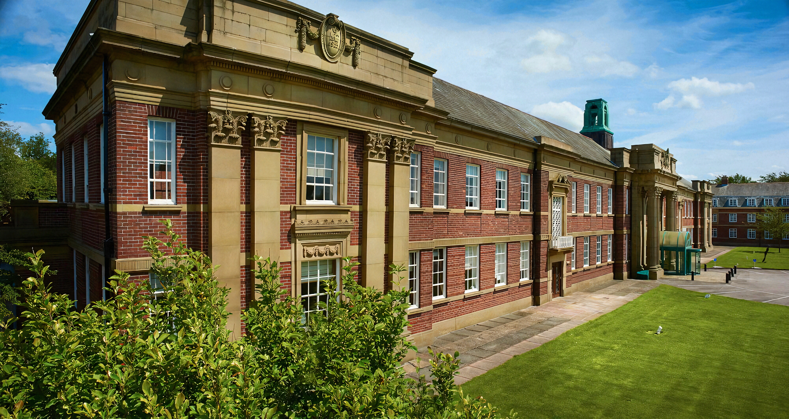
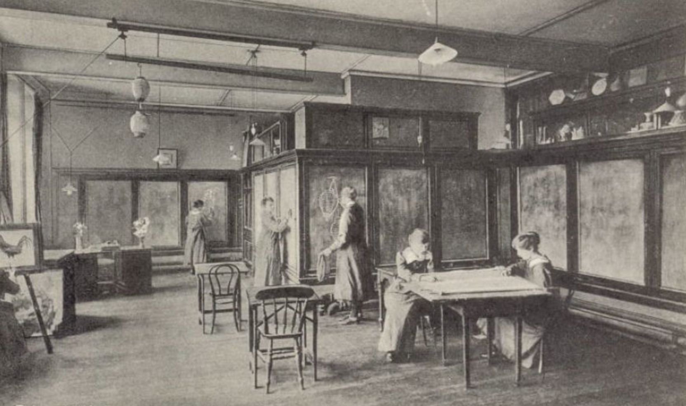
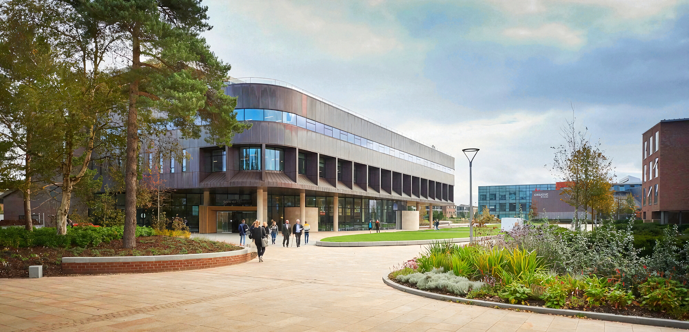
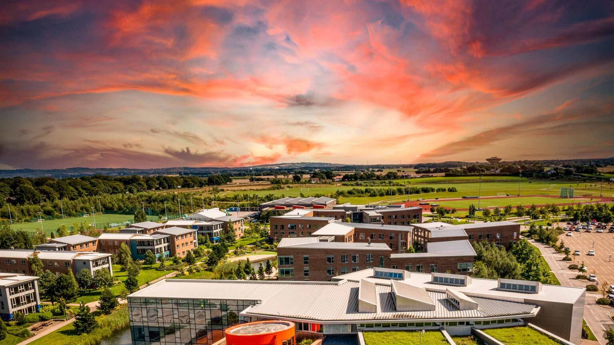
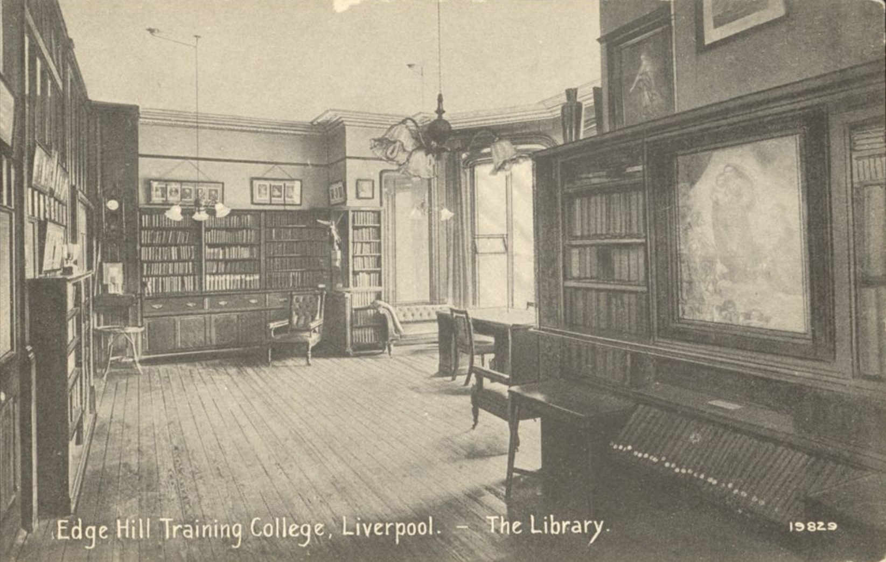
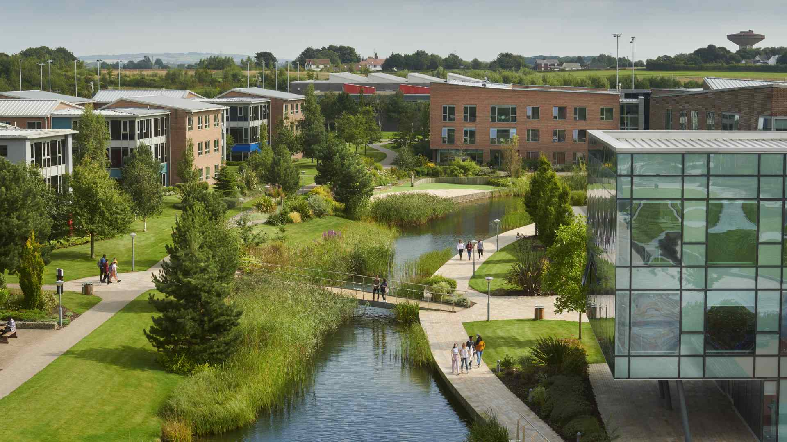

About Us
The Edge Hill University archive is the repository for the print and visual history of the institution from its foundation.



The Edge Hill University archive is the repository for the print and visual history of the institution from its foundation.

We also hold, and are actively seeking, collections that support the teaching, learning and research interests of the university.

Founded in 1885 as the first non-denominational teacher training college for women, Edge Hill would go on to deliver a wider range of degree programmes (along the way accepting its first male students in 1959), eventually becoming the modern university it is today.

The archive repository is based within the Catalyst building on our beautiful campus in Ormskirk, Lancashire.

The archive manages enquiries and makes material available for use Monday – Thursday 9.00am- 17.00pm. Please note that all archive appointments must be pre-booked.

This Epexio archive catalogue is a work in progress. New items are being added on a regular basis and the current online catalogue reflects only a small portion of our complete holdings.

Please don’t hesitate to contact us if you wish to check if we have something you cannot see in the catalogue or if you wish to offer to donate something you think we might not already have and be interested in.